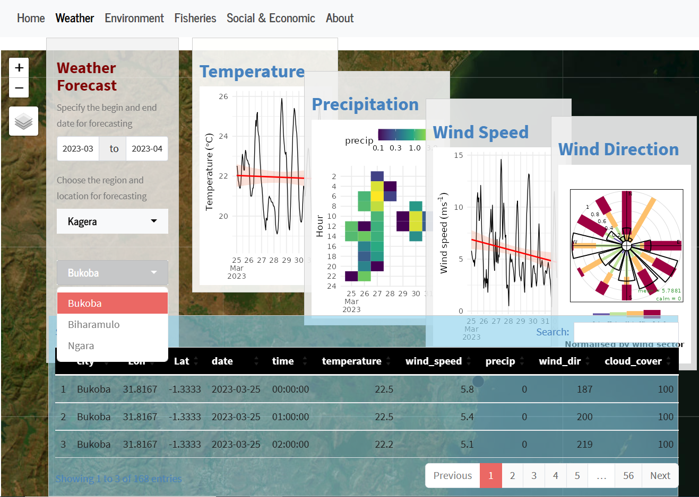

![]()

Interactive Web Application for Cage Aquaculture in Lake Victoria
Fisheries
Aquaculture
Digitalized Cage Culture
Cage aquaculture is a promising way to increase fish production in Tanzania’s Lake Victoria (Kashindye et al., 2015; Orina et al., 2021). However, proper planning is crucial to ensure the sustainability and success of such ventures (Mlaponi et al., 2015). That’s where the interactive web app for planning cage aquaculture comes in Figure 1. In this digital age, where data is abundant and the ability to make data-driven decisions is crucial, Shiny provides a powerful web applications that can be used to analyze and visualize data.
Developed by Masumbuko Semba from the Nelson Mandela African Institution of Science and Technology and a team of experts from the Tanzania Fisheries Research Institute, this interactive web app is designed to help fish farmers and investors plan their cage aquaculture operations in Lake Victoria.
This app1, which is still under active development, but its beta version is up and running online provides users with a range of tools and information to help them make informed decisions about their cage aquaculture projects. Users can input data such as the size and location of their cages, the type of fish they want to farm, and the expected production volume. The app then uses this information to generate a detailed plan that takes into account factors such as water quality, feed requirements, and environmental impacts.
One of the key features of the Shiny app is its ability to simulate different scenarios and provide users with feedback on the potential outcomes. For example, users can adjust the stocking density of their cages or the amount of feed they provide and see how these changes will affect their production and profitability. This helps users to optimize their operations and make the most of their resources.
The Shiny app also provides users with access to a range of resources and information on cage aquaculture in Lake Victoria Figure 2. This includes data on water quality, fish species, and market trends, as well as best practices for cage construction and operation.

Here are some benefits that this interactive web app (dashboard) offers for cage culture in Lake Victoria:
- Interactive maps showing the location of cage culture sites and their proximity to sensitive habitats or protected areas.
- Data visualizations of water quality data, including temperature, dissolved oxygen, and nutrient levels, to help identify impacts of cage culture on the surrounding ecosystem.
- A dashboard showing trends in fish production, species diversity, and other indicators of the health of the aquaculture system.
- Tools for modeling different scenarios, such as changes in feed composition or stocking densities, to help assess the impacts of different management strategies.
- Educational resources, such as videos or articles, to help users learn more about the environmental impacts of cage culture and how they can make informed decisions about their seafood choices.
Overall, the web app for cage aquaculture in Lake Victoria is an invaluable tool for anyone looking to invest in this growing industry. By providing users with the information and tools they need to make informed decisions, this app can help to ensure the sustainability and success of cage aquaculture operations in Tanzania’s largest lake. Furthermore, this Shiny app could be a valuable tool for researchers, policymakers, and members of the public who are interested in understanding the environmental impacts of aquaculture and exploring ways to promote sustainable practices.
Cited sources
Kashindye, B.B., Nsinda, P., Kayanda, R., Ngupula, G., Mashafi, C., Ezekiel, C., 2015. Environmental impacts of cage culture in lake victoria: The case of shirati bay-sota, tanzania. SpringerPlus 4, 475. https://doi.org/10.1186/s40064-015-1241-y
Mlaponi, E., Mlaponi, E., Mlaponi, E., 2015. Environmental impacts of cage culture in lake victoria: The case of shirati bay, tanzania. SpringerPlus 4, 1–10.
Orina, P., Ogello, E., Kembenya, E., Muthoni, C., Musa, S., Ombwa, V., Mwainge, V., Abwao, J., Ondiba, R., Kengere, J., others, 2021. The state of cage culture in lake victoria: A focus on sustainability, rural economic empowerment, and food security. Aquatic Ecosystem Health & Management 24, 56–63.
Footnotes
https://semba.shinyapps.io/vizingaApp/↩︎